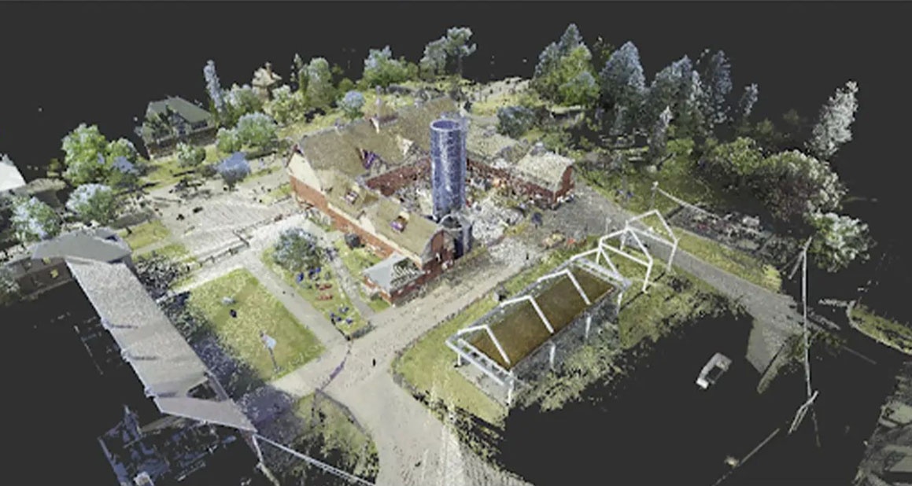

DAIRY BUILDING DIGITIZATION
Professional Work, 2021
Revit, Recap, dRofus, Dynamo
The Experimental Farm, Ottawa
I was responsible for creating detailed parametric families of doors and other wall-based components, creating walls and roof profiles based on historic plans, collaborating with a team of two other interns, and creating this flythrough.

Point cloud

Revit model
Exploded axo